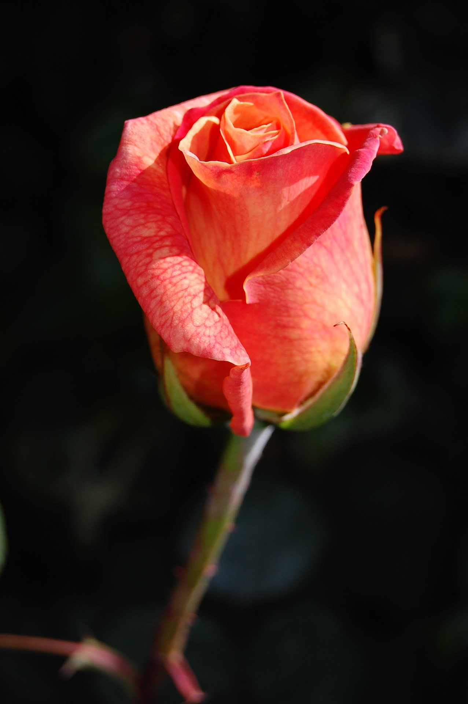
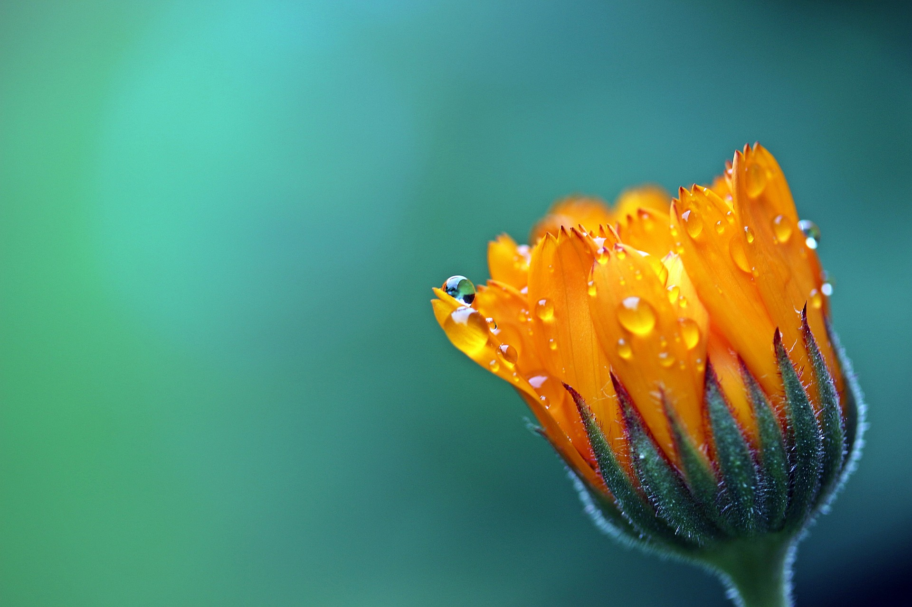
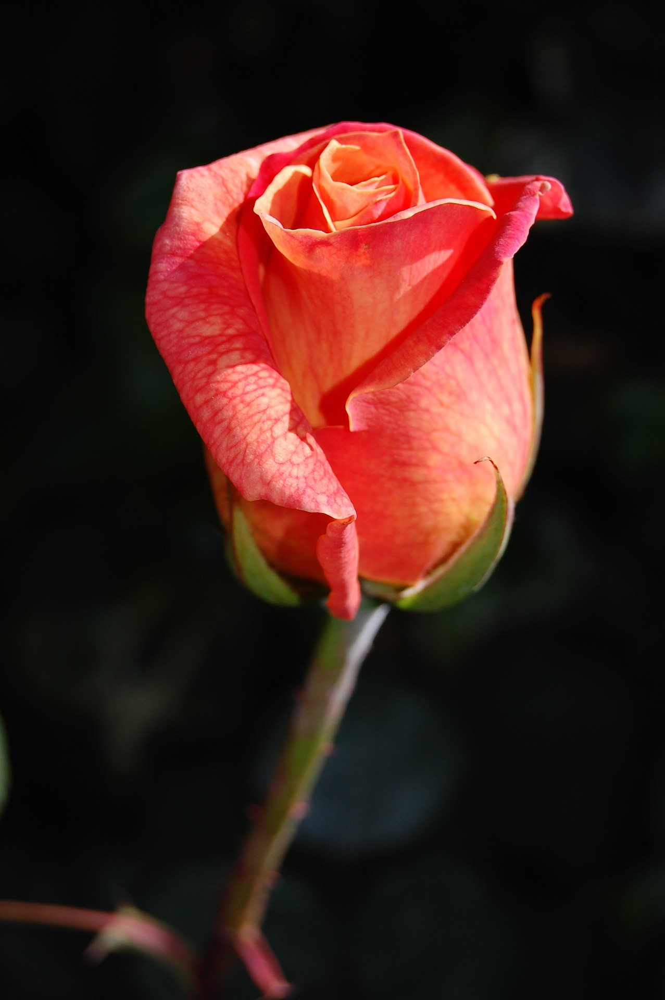
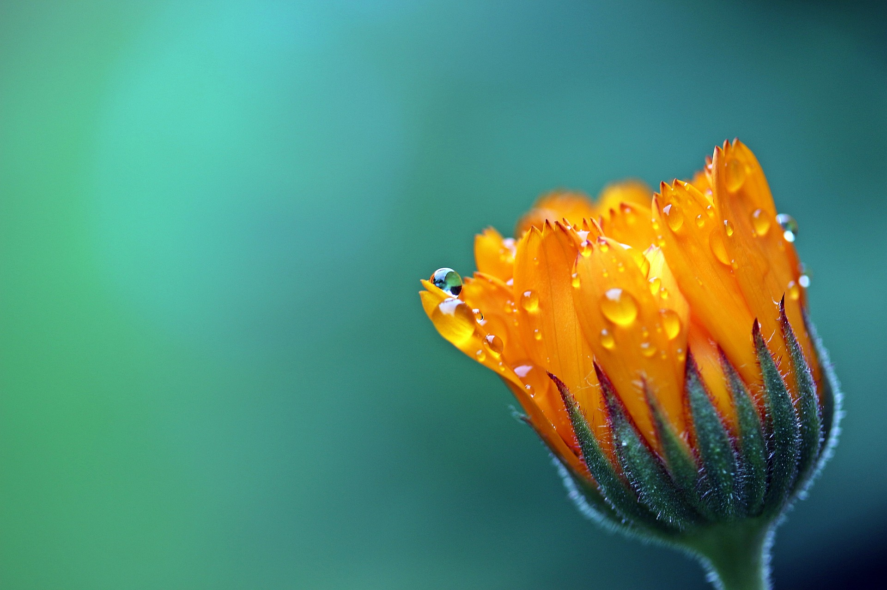
 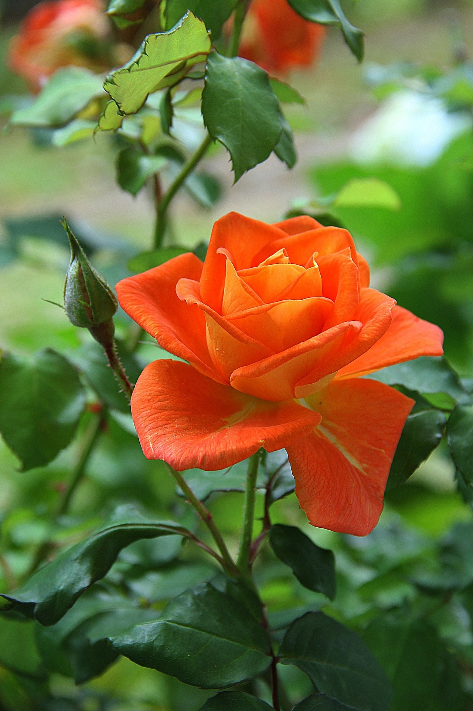
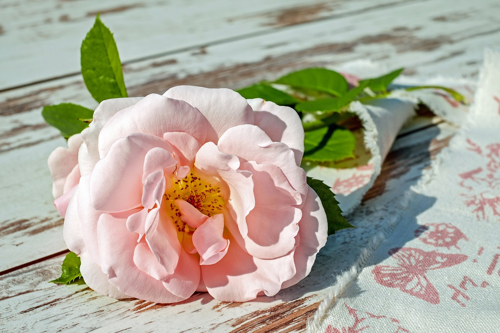
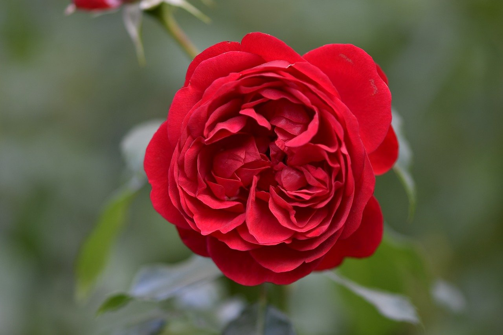
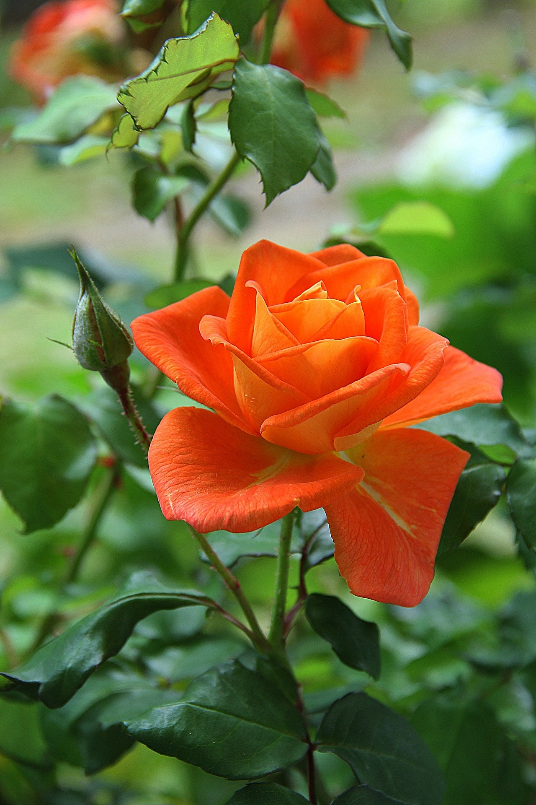
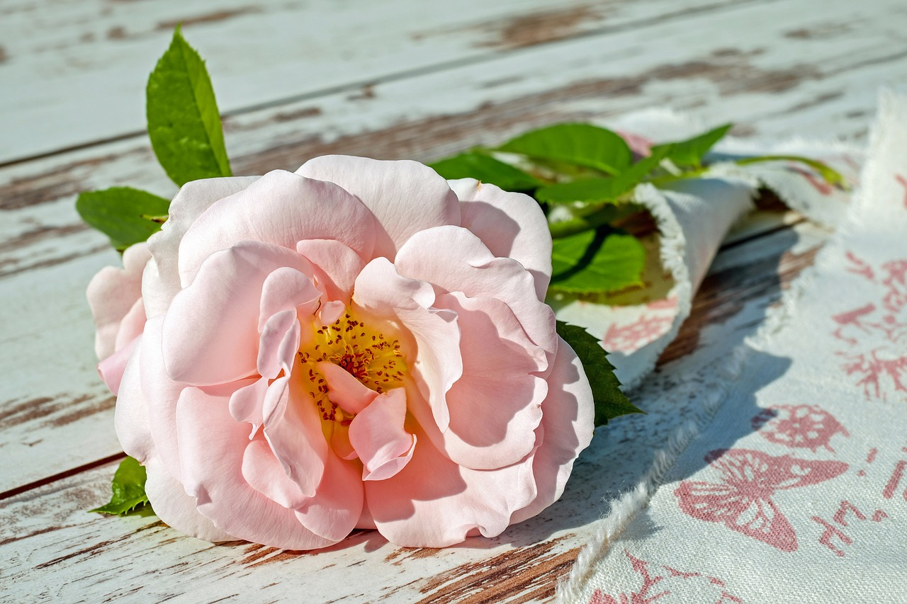
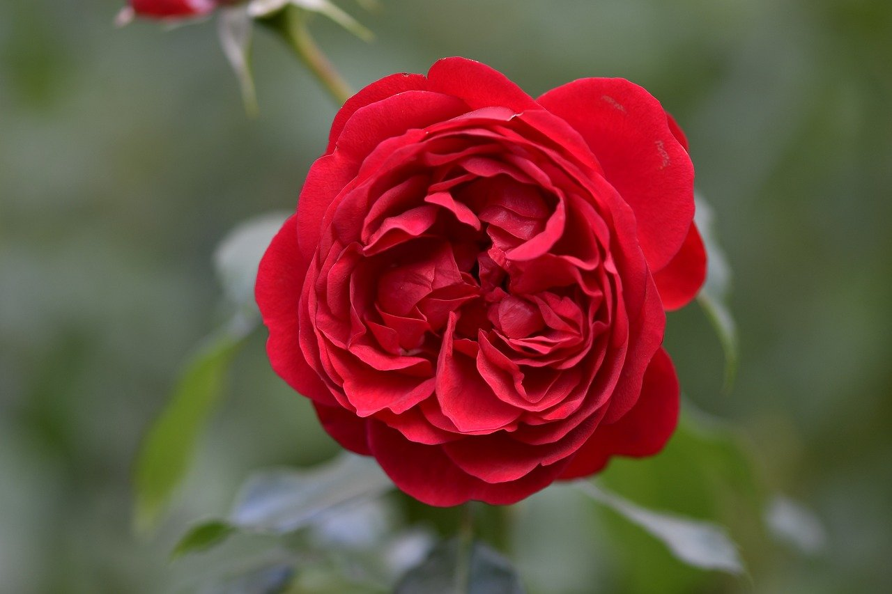

Although their arrangement is considered "typical", plant species show a wide variation in Floral Structure. The four main parts of a flower are generally defined by their positions on the receptacle and not by their function. Many flowers lack some parts or parts may be modified into other functions or look like what is typically another part.In some families, such as the grasses, the Petals are greatly reduced; in many species, the sepals are colorful and petal-like. Other flowers have Modified Petal-like Stamens; the double flowers of peonies and roses are mostly petaloid stamens.
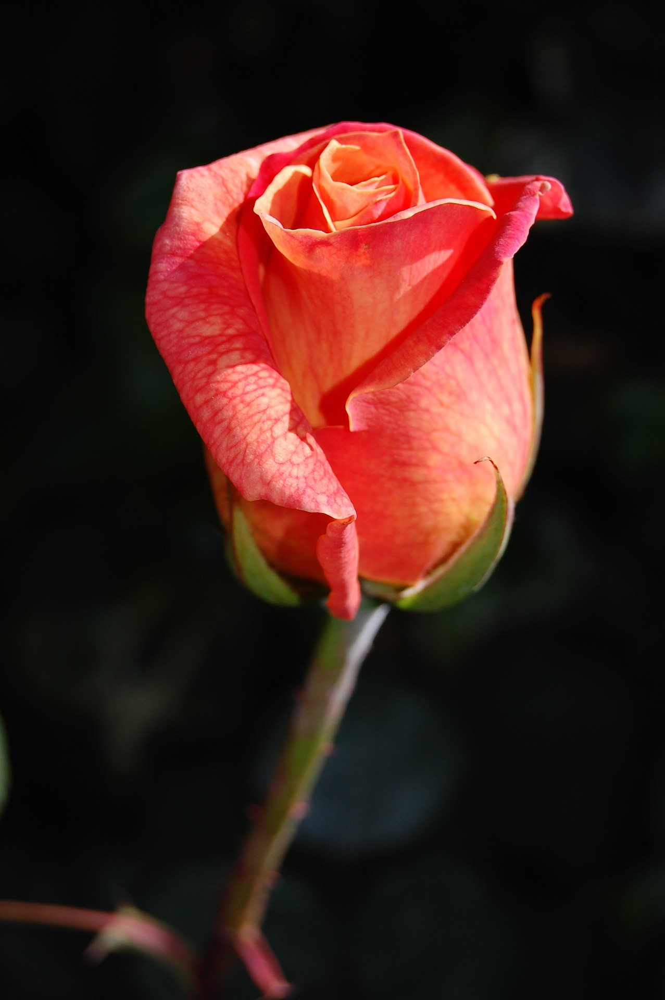
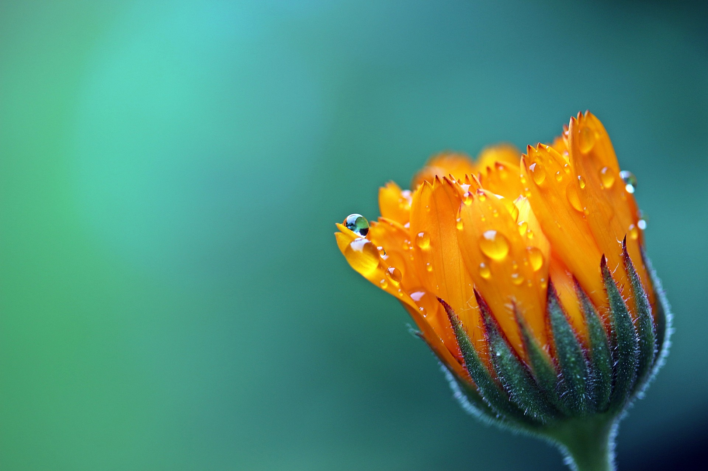
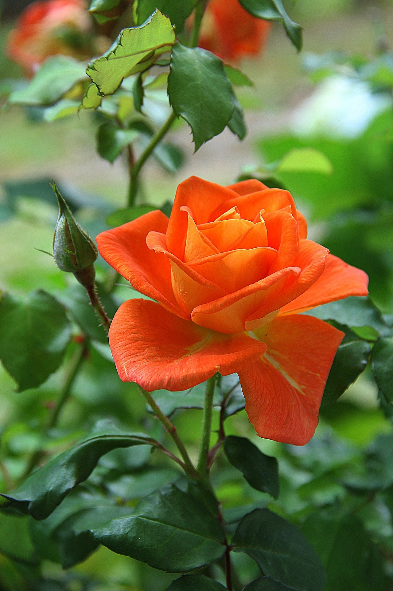
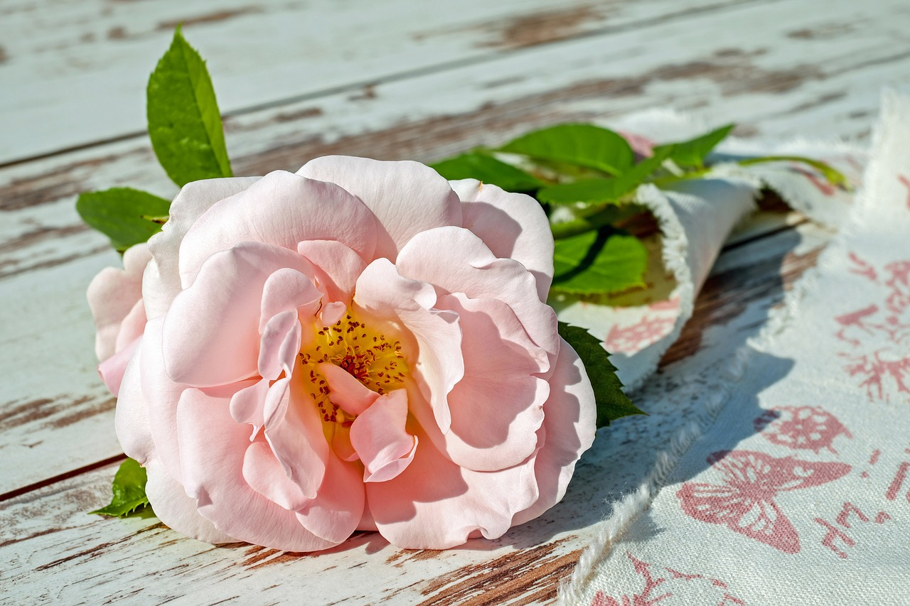
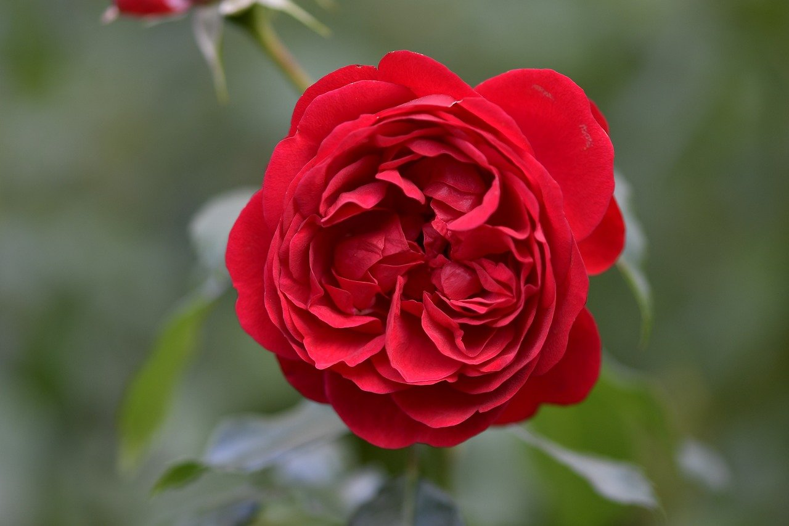